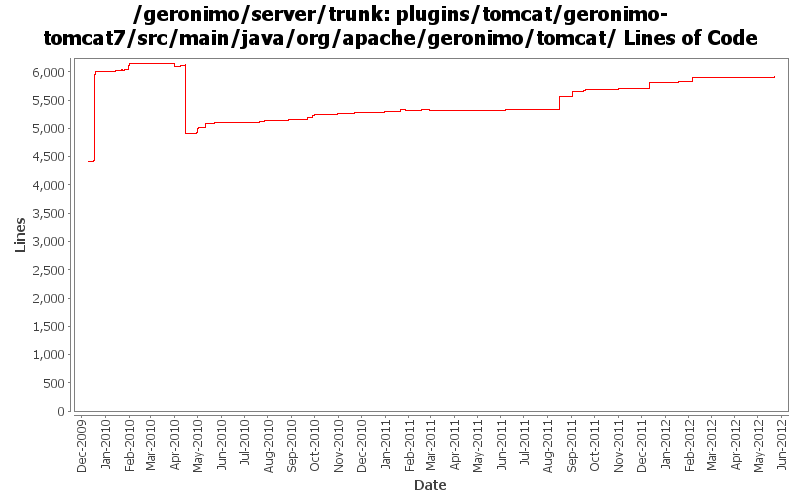

[root]/plugins/tomcat/geronimo-tomcat7/src/main/java/org/apache/geronimo/tomcat
 connector
(14 files, 2748 lines)
connector
(14 files, 2748 lines)
 core
(0 files, 0 lines)
core
(0 files, 0 lines)
 interceptor
(9 files, 605 lines)
interceptor
(9 files, 605 lines)
 listener
(1 files, 134 lines)
listener
(1 files, 134 lines)
 model
(5 files, 2214 lines)
model
(5 files, 2214 lines)
 security
(4 files, 308 lines)
security
(4 files, 308 lines)
 authentication
(7 files, 1363 lines)
authentication
(7 files, 1363 lines)
 jaspic
(2 files, 268 lines)
jaspic
(2 files, 268 lines)
 impl
(1 files, 73 lines)
impl
(1 files, 73 lines)
 jacc
(2 files, 235 lines)
jacc
(2 files, 235 lines)
 stats
(2 files, 263 lines)
stats
(2 files, 263 lines)
 valve
(3 files, 184 lines)
valve
(3 files, 184 lines)

| Author | Changes | Lines of Code | Lines per Change |
|---|---|---|---|
| Totals | 203 (100.0%) | 4113 (100.0%) | 20.2 |
| djencks | 39 (19.2%) | 2123 (51.6%) | 54.4 |
| xuhaihong | 121 (59.6%) | 1669 (40.6%) | 13.7 |
| gawor | 23 (11.3%) | 235 (5.7%) | 10.2 |
| rickmcguire | 5 (2.5%) | 35 (0.9%) | 7.0 |
| genspring | 2 (1.0%) | 20 (0.5%) | 10.0 |
| dblevins | 4 (2.0%) | 14 (0.3%) | 3.5 |
| xiaming | 7 (3.4%) | 8 (0.2%) | 1.1 |
| delos | 1 (0.5%) | 8 (0.2%) | 8.0 |
| michaelfang | 1 (0.5%) | 1 (0.0%) | 1.0 |
GERONIMO-6352 Set session configurations while they are explicitly configured
24 lines of code changed in 1 file:
Merge changes from GERONIMO-6341 orm.xml does not take effect in latest Geronimo 3.0 beta branch.
15 lines of code changed in 1 file:
Merge 1333350,1333352,1334031,1334300,GERONIMO-6345,GERONIMO-6348 into trunk
0 lines of code changed in 3 files:
GERONIMO-6274 Add @Persistent(manageable=false) annotation to some setter methods of connector parameters so that those parameters could be set via admin console, for trunk
1 lines of code changed in 1 file:
GERONIMO-6266 The jndi prefix URL could not work before the web application is totally started
143 lines of code changed in 3 files:
GERONIMO-6264 Can't access geronimo Java:com jndi tree from javax.servlet.ServletRequestListener.requestInitialized(ServletRequestEvent) - a workaround
19 lines of code changed in 1 file:
GERONIMO-6262 Tomcat ContextConfig API changed, use init() accordingly, cf rev 1231041 branch 3.0-beta
1 lines of code changed in 1 file:
GERONIMO-6250 Add maxParameterCount to gbean attribute for easy configuaration from admin console to 3.0 trunk, patch provided by Yi Xiao
1 lines of code changed in 1 file:
GERONIMO-6228 Jar resource and getRealPath cache should not be cleaned while uninstalling embedded WAB in EBA
113 lines of code changed in 2 files:
GERONIMO-6204 Decouple OpenWebBeans from web container
72 lines of code changed in 6 files:
GERONIMO-6171
a. Comment out the codes for adding default context.
b. Use "" for the root context path
6 lines of code changed in 1 file:
GERONIMO-5432 Encrypt password values in server.xml (Based on the patch from Xiao Yi)
32 lines of code changed in 2 files:
GERONIMO-6145 Factory info should not be shared among those web jsf applications in one EAR package
7 lines of code changed in 2 files:
GERONIMO-5743 Use DeploymentWatcher to delete the temporary directories while uninstalling the applications
96 lines of code changed in 3 files:
GERONIMO-6041 Exception thrown when delete a connector via admin console
1 lines of code changed in 1 file:
Add a missing system artifact in the filter
1 lines of code changed in 1 file:
GERONIMO-5743 ServletContext.getRealPath() returns null
272 lines of code changed in 3 files:
GERONIMO-5651 Enable SPNEGO support, provided by ShengHao Fang
3 lines of code changed in 1 file:
GERONIMO-5050 really use only one owb context for the whole ear, and combine all the module info into it
3 lines of code changed in 1 file:
GERONIMO-6043 gbean reordering so initorder can work
0 lines of code changed in 1 file:
GERONIMO-5050 Start of always using openejb for owb
3 lines of code changed in 3 files:
GERONIMO-5050 Use more explicit initialization of owb rather than relying on properties. Start integrating the needed changes
1 lines of code changed in 1 file:
Upgrade Tomcat version to 7.0.18.0-SNAPSHOT
8 lines of code changed in 1 file:
GERONIMO-6027 fail to create BIO HTTPS connector for Tomcat using admin console, patch from Shenghao Fang.
1 lines of code changed in 1 file:
GERONIMO-5652 generic auth module, patch provided by Fang ShengHao
3 lines of code changed in 1 file:
expose document base for web application
3 lines of code changed in 1 file:
GERONIMO-5993 MyFaces WebApplicationContext might not work if multiple JSF web applications in the same EAR package
Now, the name of web module will be used as the key.
12 lines of code changed in 3 files:
a. Update the WebAttributeNames in the geronimo-web module to WebApplicationConstants
b. Update the WebApplicationConstants in the geronimo-wab module to WABApplicationConstants
12 lines of code changed in 2 files:
use unwrapped bundle for osgi-bundlecontext attribute
6 lines of code changed in 1 file:
logger might not be initialized
10 lines of code changed in 1 file:
a. Enable POJO web service class enhancement on the runtime for Tomcat assembly
b. Disable web service deployer in UDDI module temporarily
53 lines of code changed in 2 files:
GERONIMO-5821 Make sure cleanup action is taken if any RuntimeException is thrown in the invocation chain
23 lines of code changed in 1 file:
GERONIMO-5788: Expose BundleContext in ServletContext under Spring-named attribute
3 lines of code changed in 1 file:
a. No need to register the url stream handler since OSGi framework has already done it
b. Recover the actions for adding application listener, do not see a reason that we could remove it.
7 lines of code changed in 1 file:
Use ThreadLocal to keep the context info, and initialization work
49 lines of code changed in 2 files:
Configure the resource attributes from bundle info
12 lines of code changed in 1 file:
Related changes for OWB-503: Reduce static synchronized hashmap usage
For Geronimo this means mostly not passing around a HashMap as context, but instead the new WebBeansContext object
14 lines of code changed in 4 files:
GERONIMO-5685 No initialized web beans context is attached while creating servlet instance in Tomcat assembly
23 lines of code changed in 2 files:
Fix the test case failures
1 lines of code changed in 1 file:
Avoid duplicate InstanceManager is created on each getInstanceManager invocation
3 lines of code changed in 1 file:
(64 more)